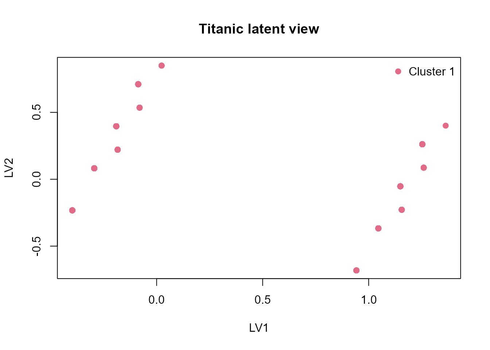

Case Study: Titanic Passenger Structure
Source:vignettes/case-study-titanic.Rmd
case-study-titanic.RmdData preparation
The built-in Titanic dataset is a contingency table, so
we first expand it to one row per passenger and keep a compact
mixed-type clustering table.
titanic_df <- as.data.frame(Titanic)
titanic_rows <- titanic_df[rep(seq_len(nrow(titanic_df)), titanic_df$Freq), c("Class", "Sex", "Age", "Survived")]
names(titanic_rows) <- c("class", "sex", "age_group", "survived")
titanic_rows$passenger_id <- sprintf("P%04d", seq_len(nrow(titanic_rows)))
titanic_rows$class <- ordered(titanic_rows$class, levels = c("Crew", "3rd", "2nd", "1st"))
titanic_rows$sex <- factor(titanic_rows$sex)
titanic_rows$age_group <- factor(titanic_rows$age_group)
titanic_rows$survived <- factor(titanic_rows$survived)
head(titanic_rows)
#> class sex age_group survived passenger_id
#> 3 3rd Male Child No P0001
#> 3.1 3rd Male Child No P0002
#> 3.2 3rd Male Child No P0003
#> 3.3 3rd Male Child No P0004
#> 3.4 3rd Male Child No P0005
#> 3.5 3rd Male Child No P0006Fit the clustering workflow
fit_titanic <- fit_uccdf(
titanic_rows[, c("passenger_id", "class", "sex", "age_group")],
id_column = "passenger_id",
candidate_k = 1:5,
n_resamples = 20,
n_null = 8,
seed = 7
)
fit_titanic
#> uccdf fit
#> - samples: 2201
#> - active columns: 3
#> - selected_k: 1
#> - global_p_value: 0.4444
select_k(fit_titanic)
#> k stability null_mean null_sd z_score p_value p_adjusted objective
#> 1 2 0.6824715 0.7994364 0.09257661 -1.26343893 1.0000000 1.0000000 -1.4020684
#> 2 3 0.6975981 0.6874397 0.11416367 0.08898071 0.7777778 1.0000000 -0.1307417
#> 3 4 0.6385707 0.6850318 0.01069070 -4.34594056 1.0000000 1.0000000 -4.6231994
#> 4 5 0.7976143 0.6808469 0.01787899 6.53097568 0.1111111 0.4444444 6.2090881Join assignments back to survival status
titanic_assign <- merge(
augment(fit_titanic),
titanic_rows,
by.x = "row_id",
by.y = "passenger_id",
all.x = TRUE
)
head(titanic_assign)
#> row_id cluster confidence ambiguity class sex age_group survived
#> 1 P0001 1 1 0 3rd Male Child No
#> 2 P0002 1 1 0 3rd Male Child No
#> 3 P0003 1 1 0 3rd Male Child No
#> 4 P0004 1 1 0 3rd Male Child No
#> 5 P0005 1 1 0 3rd Male Child No
#> 6 P0006 1 1 0 3rd Male Child No
survival_by_cluster <- prop.table(table(titanic_assign$cluster, titanic_assign$survived), margin = 1)
round(survival_by_cluster, 3)
#>
#> No Yes
#> 1 0.677 0.323Visual review
plot_embedding(fit_titanic, main = "Titanic latent view")
plot_consensus_heatmap(fit_titanic, main = "Titanic consensus heatmap")